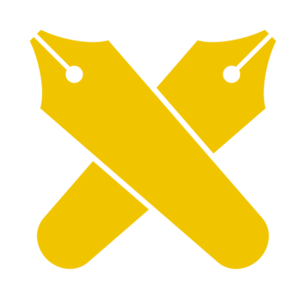

PacificVis 2024
IEEE 17th Pacific Visualization Conference (PacificVis 2024) will be hosted by the Faculty of Science and Technology, Keio University, from April 23 through April 26, 2024 at Mita campus, Tokyo, Japan. The technical papers program of PacificVis 2024 will include a new journal track in addition to a conference track and a VisNotes track. Papers accepted by the journal track will be included in a special issue of IEEE TVCG. Call for papers for each track is available. For general inquiries, please email Professor Issei Fujishiro, the general chair, at ifujishiro@keio.jp.
News
- The list of accepted papers for Visualization Meets AI Workshop is added. (2024-02-28)
- Keynote 1 on April 24 by Prof. Huamin Qu (Hong Kong University of Science and Technology) on “Design Guidelines and Human-AI Collaboration for Data Storytelling”. (more …) (2024-02-27)
- We are excited to invite two keynote speakers Dr. Bongshin Lee (Microsoft Research) and Prof. Huamin Qu (Hong Kong University of Science and Technology). (2024-02-16)
- PacificVis commitment to Diversity, Inclusivity, and Accessibility. (2024-02-01)
- It has been formally approved by IEEE Computer Society that PacificVis 2024 is renamed to conference. (2024-01-30)
- The PacifivVis 2024 banquet takes place on a cruise boat on April 25 (Thu)! (2024-01-30)
- The list of accepted papers for conference track is added. (2024-01-30)
- The list of TVCG papers (accepted for journal paper track, and from regular issues) is added. (2024-01-18)
- Venue (accommodation) and attend information is added. (2024-01-15)
- Call for Papers is out. (2023-07-24)
Sponsor
Co-Sponsor

Faculty of Science and Technology
Keio University